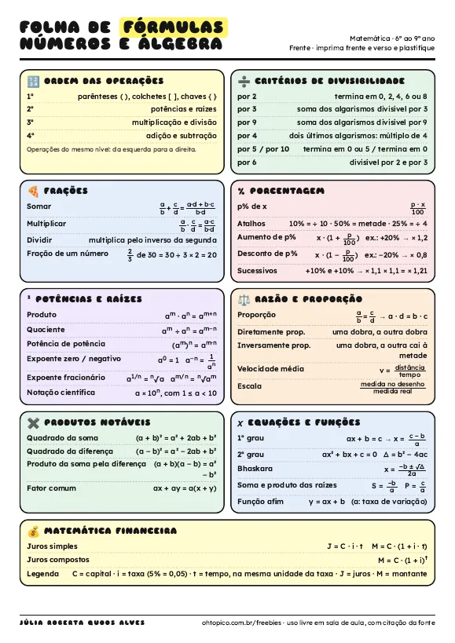

Materiais gratuitos para imprimir e usar
Recursos de matemática para os anos finais do ensino fundamental, prontos para baixar. Use à vontade em sala de aula, citando a fonte.
Folha de fórmulas plastificável

- Frente: números e álgebra, com operações, divisibilidade, frações, porcentagem, potências, proporção, produtos notáveis, equações e juros.
- Verso: geometria e dados, com áreas, volumes, ângulos, Pitágoras, plano cartesiano, unidades, estatística e probabilidade.
- Imprima frente e verso, plastifique e deixe na carteira ou no caderno do 6º ao 9º ano.
Simulador financeiro para a sala de aula
🐷 Orçamento da mesadaDivida a mesada em porcentagens e descubra em quantos meses chega à meta.
📈 Juros simples x compostosVeja no gráfico o dinheiro crescer, com depósitos mensais.
🧾 À vista ou parcelado?Descubra quanto se paga a mais e os juros escondidos nas parcelas.
- Funciona no computador e no celular, sem cadastro. Ótimo para projetar em aula.
- A folha de atividades traz três desafios para os alunos resolverem e conferirem no simulador, com respostas para o professor.
Quer mais? No material didático há jogos, planos de aula e simulados da OBMEP, todos gratuitos. Apoiadores do Catarse têm acesso à área premium, com jogo exclusivo e tutorial de como criar jogos em HTML.
Materiais criados por Júlia Roberta Quoos Alves. Uso livre em sala de aula, com citação da fonte. Sugestões: contato@ohtopico.com.br